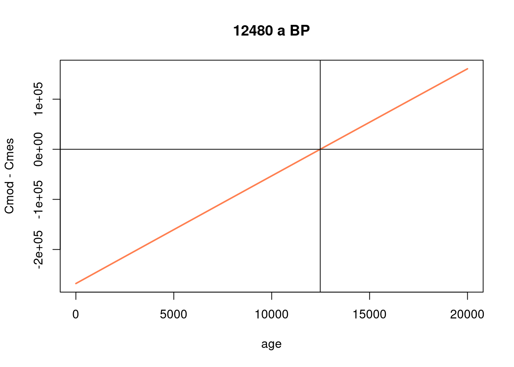

4.4 Two end-member situations
No we are going to build a summary plot showing the influence of both exposure and denudation.
altitude = 1000 # elevation in m
latitude = 45 # latitude in degrees
nuc = "Be10"
P = atm_pressure(alt=altitude,model="stone2000") # compute atmospheric pressure at site
S = scaling_st(P,latitude) # compute the scaling parameters according to Stone (2000)
t = 10^seq(log10(1),log10(10e6),length.out=1000) # time vector, log-spaced!
# calculation of the evolution of concentration for denudation = 0
C = solv_conc_eul(0,0,t,0,prm[,nuc],S,Lambda) # compute concentration for pure exposure
plot(t,C,type="l",col="cornflowerblue",lwd=3,ylab="Concentration (at/g)",xlab="Time (a)",log="xy")
grid()
text(max(t),max(C),0,cex=0.5,adj=0) # label the curve
# now we make the same computation for other denudation rates
ero = c(1,10,100,1000) # erosion vector in m/Ma
for (i in 1:length(ero)){
e = ero[i] * (100/1e6*rho) # convert denudation in g/cm2/a
C = solv_conc_eul(0,e,t,0,prm[,nuc],S,Lambda) # compute concentration for pure exposure
lines(t,C,col="cornflowerblue",lwd=3)
text(max(t),max(C),ero[i],cex=0.5,adj=0) # label the curve
}
Note that this a log-log plot. It is probably one of the most important figure to keep in mind when analyzing TCN concentrations. It clearly shows the existence of two end-member situations when interpreting these concentrations, in terms of exposure age or denudation rates, and the transition between the two.
TODO Think about a bit about the following points
- What are the key hypothesis made when interpreting a TCN concentration in terms of
- exposure age
- surface denudation
- Can you think of geological/geomorphological situations where these hypotheses are violated?
- Why are the plateau concentrations so different?
- How is the time to reach the plateau changing and why?
Balco, Greg. 2017. “Production Rate Calculations for Cosmic-Ray-Muon-Produced 10Be and 26Al Benchmarked Against Geological Calibration Data.” Quaternary Geochronology 39: 150–73. https://doi.org/gjq4hn.
Balco, Greg, John O. Stone, Nathaniel a. Lifton, and Tibor J. Dunai. 2008. “A Complete and Easily Accessible Means of Calculating Surface Exposure Ages or Erosion Rates from 10Be and 26Al Measurements.” Quaternary Geochronology 3 (3): 174–95. https://doi.org/fqdvm9.
Borchers, Brian, Shasta Marrero, Greg Balco, Marc Caffee, Brent Goehring, Nathaniel Lifton, Kunihiko Nishiizumi, Fred Phillips, Joerg Schaefer, and John Stone. 2016. “Geological Calibration of Spallation Production Rates in the CRONUS-Earth Project.” Quaternary Geochronology 31: 188–98. https://doi.org/f75rvk.
Gosse, John C., and Fred M. Phillips. 2001. “Terrestrial in Situ Cosmogenic Nuclides: Theory and Application.” Quaternary Science Reviews 20 (14): 1475–1560. https://doi.org/cz26h5.
Lifton, Nathaniel, Tatsuhiko Sato, and Tibor J. Dunai. 2014. “Scaling in Situ Cosmogenic Nuclide Production Rates Using Analytical Approximations to Atmospheric Cosmic-Ray Fluxes.” Earth and Planetary Science Letters 386: 149–60. https://doi.org/f5r46p.
Marrero, Shasta M., Fred M. Phillips, Marc W. Caffee, and John C. Gosse. 2016. “CRONUS-Earth Cosmogenic 36Cl Calibration.” Quaternary Geochronology 31: 199–219. https://doi.org/f75rpt.
Martin, L. C. P., P.-H. Blard, G. Balco, J. Lavé, R. Delunel, N. Lifton, and V. Laurent. 2017. “The CREp Program and the ICE-D Production Rate Calibration Database: A Fully Parameterizable and Updated Online Tool to Compute Cosmic-Ray Exposure Ages.” Quaternary Geochronology 38 (March): 25–49. https://doi.org/f92pbm.
Stone, John O. 2000. “Air Pressure and Cosmogenic Isotope Production.” Journal of Geophysical Research: Solid Earth 105 (B10): 23753–59. https://doi.org/fbsd87.
Uppala, S. M., P. W. KÅllberg, Adrian J. Simmons, U. Andrae, V. Da Costa Bechtold, M. Fiorino, J. K. Gibson, et al. 2005. “The ERA-40 Re-Analysis.” Quarterly Journal of the Royal Meteorological Society 131 (612): 2961–3012. https://doi.org/fthgs7.